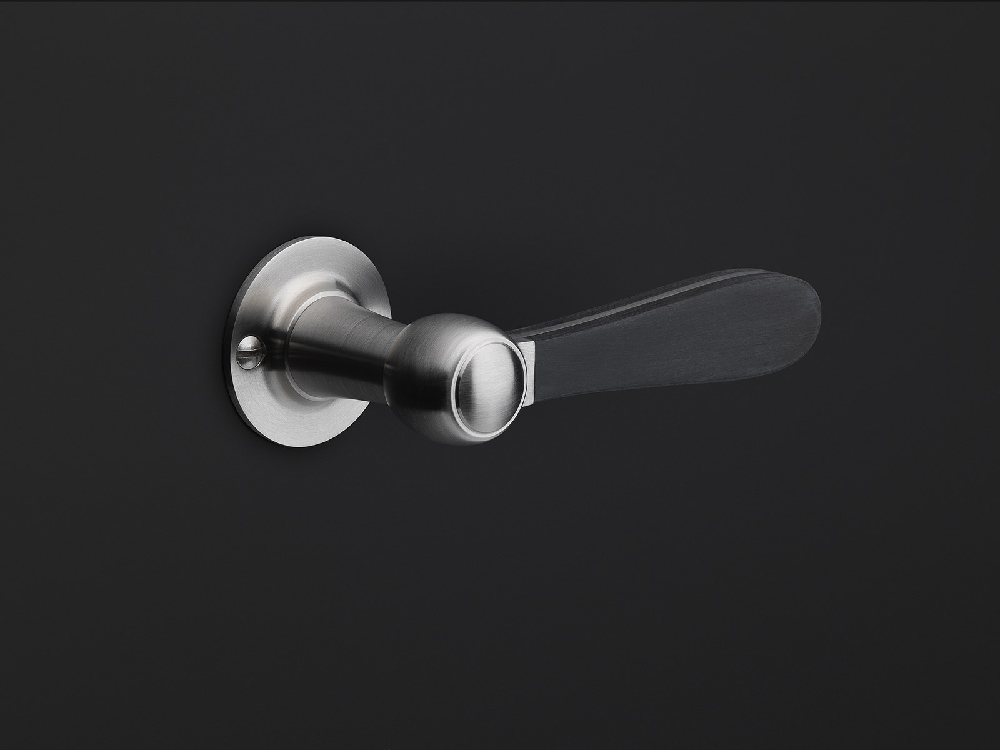

CREATURA
FORMANI
14 / 22
Коллекция

BOSCO
by Lázaro Rosa-Violán
Классический дизайн с современным характером: «двери из прошлого, ведущие в будущее».
Состав
двери · окна · мебель · аксессуары
Основа
сатин. или полир. нерж. сталь, нелакированная латунь
Рукоять
сатин. чёрный или мрамор каррара